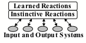
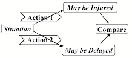

PART V. LEVELS OF MENTAL ACTIVITIES
This is a draft (8/8/05) of part V of The Emotion Machine by Marvin Minsky. Send comments to minsky@media.mit.edu.
PART V. LEVELS OF MENTAL ACTIVITIES 1
§5-1. Instinctive Reactions................................... 2
§5-2. Learned Reactions........................................ 4
§5-3. Deliberation................................................. 5
§5-4. Reflective Thinking................................... 10
§5-5. Self-Reflection.......................................... 11
§5-6. Self-Conscious Reflection........................ 12
§5-7. Imagination............................................... 15
§5-8. The Concept of a "Simulus.".................... 19
§5-9. Prediction Machines................................. 21
Summary............................................................. 22
“We are evidently unique among species in our symbolic ability, and we are certainly unique in our modest ability to control the conditions of our existence by using these symbols. Our ability to represent and simulate reality implies that we can approximate the order of existence and … gives us a sense of mastery over our experience."— Heinz Pagels, in The Dreams of Reason
No person has the strength of an ox, the stealth of a cat, or an antelope’s speed—but our species surpasses all the rest in our flair for inventing new ways to think. We fabricate weapons, garments and dwellings. We’re always developing new forms of art. We’re matchless at making new social conventions, creating intricate laws to enforce them—and then finding all sorts of ways to evade them.
What enables our minds to generate so many new kinds of things and ideas? This chapter will propose a scheme in which our resources are organized into six different levels of processes.
Beginning with simple instinctive reactions, each layer is built on the previous one—until they extend to processes that involve our highest ideals and personal goals. To see why we need many levels for this, let’s revisit the scene in §4-2.
Joan is part way across the street on the way to deliver her finished report. While thinking about what to say at the meeting, she hears a sound and turns her head —and sees a quickly oncoming car. Uncertain whether to cross or retreat but uneasy about arriving late, Joan decides to sprint across the road. She later remembers her injured knee and reflects upon her impulsive decision. “If my knee had failed, I could have been killed—and what would my friends have thought of me?”
The first part of this chapter will show how each level of this diagram could explain some of what happened inside Joan’s mind. We often react to events ‘without thinking’, as though we were driven by If–>Do rules like those described in §1-4. But such simple reactions can only explain the first few events that we see in this scene; the rest depends on activities in all those other levels of Joan’s ways of thinking.
Inborn, Instinctive Reactions: Joan hears a sound and turns her head. All animals are born equipped with ‘instincts’ that help them to survive.
Learned Reactions: She sees a quickly oncoming car. Joan had to learn that conditions like this demand specific ways to react.
Deliberative Thinking: To decide what to say at the meeting, she considers several alternatives, and tries to decide which would be best.
Reflective Thinking: Joan reflects upon what she has done. She reacts, not just to things in things in the world, but also to recent events in her brain.
Self-Reflective Thinking: Being “uneasy about arriving late” requires her to keep track of the plans that she’s made for herself.
Self Conscious Emotions: When asking what her friends think of her, she also asks how her actions concord with ideals she has set for herself.
The second part of this chapter will show how such systems could “imagine” things. Whenever you ask, “What would happen if,” or express any hope, desire, or fear, you’re envisaging things that have not yet appeared. Whenever you interact with your friends, you’re anticipating how this may affect them. Whatever you see, it suggests some ideas about possible futures those objects might bring. How could our mental resources conceive of things that do not yet exist, and then apply those new ideas to ways to change and extend themselves?
∞∞∞∞∞∞∞∞∞∞∞∞∞∞∞∞∞∞∞
§5-1. Instinctive Reactions.
“… It shows that for all the brag you hear about knowledge being such a wonderful thing, instink is worth forty of it for real unerringness. —Mark Twain, in Tom Sawyer Abroad
Joan hears a sound and turns her head.
Although we live in a populous town, there are plenty of squirrels and birds around, and sometimes a skunk or raccoon will come by. The toads and snakes vanished in recent years, but countless smaller creatures persist.
How do those animals stay alive? First, they need to find enough food. Then they need to defend themselves, because other animals need food too. To regulate their temperatures, they build all sorts of burrows and nests. They all have urges to reproduce (or their ancestors would not have evolved), so they need to seek mates and raise their young. So each species evolved machinery that enables its newborn offspring to do many things without any prior experience. This suggests that they start out with some built-in ‘If–>Do’ reaction-rules like these.
If a thing touches your skin, Do brush it away.
If that doesn’t work, Do move your body away.
If a light is too bright, Do turn your face away.
However, only a few of our If–>Do rules can be so simple as these ones are, because most of our human behaviors depend on the mental contexts that we are in. For example, a rule like "If you see food, then Do eat it" would force you to eat all the food that you see, whether or not you are hungry or need it. So those Ifs should also include some goals, as in, "If you are hungry, and you see food….” Otherwise, you'd be forced to sit on each chair that you see—or get stuck at every electrical switch, turning lights on and off repeatedly.
How does this relate to emotions and feelings? If you rapidly move your hand toward a fly, then that fly will quickly retreat, and it’s tempting for us to ‘empathize’ by attributing feelings like fear to that fly. However, we know enough about insect brains to be sure that they can’t support the kinds of complex cascades that we recognize as emotional.
In any case, this kind of ‘stimulus-response’ or ‘situated-action” model became quite popular in the early years of Psychology. Some researchers even maintained that it could explain all human behavior. However, there are problems with this.
One problem is that most rules will have exceptions to them. For example, If you drop an object, it may not fall down, if something else should intercept it. Your wristwatch will usually tell you the time, but not in the case that your watch has stopped. We could deal with some such problems by including exceptions in the Ifs of our rules—but sometimes those exceptions will have their own exceptions to them as well.
What happens when your situation matches the Ifs of several different rules? Then you’ll need some way to choose among them. One policy might arrange those rules in some order of priority. Another way would be to use the rule that has worked for you most recently. Yet another way would be to choose rules probabilistically.
However, when we face more difficult problems, simple If-Do rules won’t usually work, because we will need to look further ahead to imagine the futures each action might bring. So shortly, we’ll talk about more powerful, three-part rules that can help to predict the effects of each action.
If we have adequate sets of such If–>Do–>Then rules, then we can guess “What would happen if” before we carry an action out. Then, by doing this repeatedly, we can imagine more elaborate plans.. We’ll return to this shortly, but first we’ll discuss how a system could learn simple If–>Do rules.
∞∞∞∞∞∞∞∞∞∞∞∞∞∞∞∞∞∞∞
§5-2. Learned Reactions

All animals are born with ‘instincts’ like ‘get away from a quickly approaching object.’ Such built-in reactions tend to serve well so long as those animals stay in environments like those in which their instincts evolved. But when those worlds change, those creatures may need to be able to learn new ways to react. For example, when Joan perceives that oncoming car, she partly reacts instinctively, but she also depends on what she has learned about that particular kind of danger or threat. But how and what did she actually learn? We’ll come back to this toward the end of this book, because human learning is extremely complex, and here we’ll merely mention some ideas about how learning might work in some animals. During the 20th century, many well-known psychologists adopted this portrayal of how animals learn new If–>Do rules:
When an animal faces a new situation, it tries a random sequence of actions. Then, if one of these is followed by some ‘reward,’ then that reaction gets ‘reinforced.’ This makes that reaction more likely to happen when that animal faces the same situation.
This theory of ‘learning by reinforcement’ can be made to explain a good deal of what many kinds of animals do. Indeed, that theory was largely based on experiments with mice and rats, pigeons, dogs and cats, and snails. However, it does not help much to explain how people learn to solve difficult problems that require more complex series of actions. Indeed, deciding what to learn from these may be harder than actually solving those problems, and words like random, reward, and reinforce do not help us answer this two crucial questions:
How were the successful reactions produced? To solve a hard problem, one usually needs an intricate sequence of actions in which each step depends on what others have done. A lucky guess might produce one such step, but random choices would take far too long to find an effective sequence of them. We’ll discuss this below in Searching And Planning.
Which aspects of recent events to remember? For an If to work well, it must include only the relevant features, because one can be misled by irrelevant ones. (If you learned a new way to tie a knot, your Ifs should not mention the day of the week.) For as we’ll see in §8 Resourcefulness, if your description is too specific, then it will rarely match new situations—but if your description is too abstract, then it will match too many of them—and in either case, you won’t learn enough.
For example, suppose that you want a robot to recognize the visual image of any human hand. This is hard because we never see the same image twice—even of the very same hand—because each finger may change its position and shape, we’ll see it from different points of view, and each part will catch different amounts of light. This means that we’ll need trillions of If–>Do rules, unless we can find some special tricks that single out just the most relevant features—or if, as we’ll see in §6-2, we can formulate high-level descriptions like “a palm-shaped object with fingers attached.”
Certainly, many things that we do are based on reacting to external events by using simple If–>Do rules. However, along with those low-level reactions, we are also always making new plans and thinking about what we’ve done in the past—and those internal mental activities are what give us our unique abilities.
For example, when Joan reacted to that moving car, her reaction was partly instinctive and partly learned. However, she could not have ‘learned from experience’ that cars are especially dangerous—because if she had learned this by trial and error, she probably would not be alive; learning by ‘reinforcing’ success is a really bad way to learn to survive. Instead, she either ‘figured this out’ for herself or was told about it by someone else, and both of these must have involved higher levels of mental activities. So now let’s turn to what we call ‘thinking’—that is, the techniques that we use when we react, not just to events in the outer world, but also to other events in our brains.
∞∞∞∞∞∞∞∞∞∞∞∞∞∞∞∞∞∞∞
§5-3. Deliberation
When Joan chose “whether to cross or retreat”, she had to choose one of these rules to use:
If in street, Do retreat.
If in street, Do cross the street.
However, for Joan to make decisions like this, she needs some way to predict and compare the possible futures those actions might bring. What could help Joan to make such predictions? The simplest way would be for her to possess a collection of three-part If–>Do–>Then rules, where each If describes a situation, each Do describes a possible action, and each Then depicts what might be a likely result of it.
If in street and Do retreat, Then arrive a bit later.
If in street and Do cross, Then be slightly earlier
If in street and Do cross, Then may be injured.
But what if more than one such rule applies to the present situation. Then one could choose which rule to use by comparing the different results they predict:

Thus, these three-part rules would allow us to do experiments in our heads before we risk making mistakes in the physical world; we can mentally “look before we leap” and choose the more attractive alternatives. For example, suppose that Carol is playing with building blocks, and thinking of building a three-block arch:
Right now, she has three blocks arranged like this:
So, she imagines a plan for building that arch: first she’ll need room for her arch’s foundation—which she could achieve by using this rule: If a block is lying down, and you Stand it up, Then it will use up less space on the ground.
(1)
Then she’ll stand the two short blocks on their ends, making sure that they are the right distance apart—and then finally place the long block on top of them. We can imagine this sequence of rules as describing the changes in scenes between successive frames of a movie clip.
To envision that four-step sequence of actions, Carol will need a good many skills. To begin with, her visual systems will need to describe the shapes and locations of those blocks, some parts of which may be out of sight—and she’ll need ways to plan which blocks to move and where she ought to move them to. Then, whenever she moves a block, she must program her fingers for grasping it, and then move it to the intended place, and finally to release it there —while taking care that her arm and hand won’t collide with her body or face, or disturb the blocks already in place. And she’ll have to control the velocity, to deposit the block on the top of the arch without tumbling down its supporting blocks.
Carol: None of those seemed like problems to me. I simply imagined an arch in my mind—and saw where each of the blocks should go. Then I only had to stand two of them up (making sure that they were the right distance apart) and then place the long one across their tops. After all, I've done such things before. Perhaps I remembered those other events, and simply did the same things again.
But how could Carol ‘imagine’ how the scene would look after moving a block, before she even touches it?
Programmer: We know ways to make computers do that; we call it 'physical simulation'. For example, in each step of a new aircraft’s design, our programs can precisely predict the force on each of its surfaces, when the plane is propelled through the air. In fact, we can do this so well today that we can be virtually certain that the very first one we build will fly.
No human brain can do such huge calculations, but we still can make useful predictions by using our commonsense If–>Do–>Then rules. For example, when Carol was planning to build that arch, she might have imagined a step in which she places the long block on just one of the short ones:
Of course, that would fail because the top block will fall. However, after Carol has more experience, she will also have learned to correctly predict that that the upper block will tumble down.
Note that you can also use such rules in ‘in reverse,’ to explain how things got to their present state! Thus if you see a fallen block (A) you might guess that the previous state was (B).
Student: I wonder if using such rules would be practical? It seems to me that to make those plans, Carol would need enormous numbers of If->Do–>Then rules. For, if each of three blocks could have thousands of shapes, then Carol would need billions of different rules.

Indeed, if we make the If of a rule too specific, then it will only apply to a few situations. This means that our rules must not specify too many details, but need to express more abstract ideas. So a rule that applies to a physical object will need to represent that object in some non-pictorial way that does not change when that object changes its visual shape. Naively, most of us tend to believe that we ‘envision’ visual scenes by imagining them as like images. However, section §5-8 below will suggest that this must be mostly illusory, because those images do not much behave the ways that pictures do.
Consider that in the physical realm, when you think of grasping and lifting a block, you anticipate the feel of its weight—and predict that if you weaken your grasp, then the block will be likely to fall. In the economic realm, if you pay for a purchase, then you will own the thing you have bought, but otherwise you must give it back. In the realm of communication, when you make a statement, then your listeners may remember it—but this will more more likely to happen if you also tell them that this is important.
Every adult knows many such things, and regards them as obvious, commonsense knowledge, but every child takes years to learn how things behave in different realms. For example, if you move an object in the physical realm, then this will change the place that it’s in—but if you tell some information to your friend, that knowledge will then be in two places at once. We’ll discuss such matters more in chapter §6.[1]
Planning and Search.
By linking two or more If–>Do–>Then rules into a chain, we can imagine what would happen after several actions—and thus look several future steps ahead—if we can match the Then of each rule to the If of the next. For example, if you are in situation P and want to be in situation Q, you might already know a rule for that, such as, If P–>Do A–>Then Q. But what if you do not know such a rule? Then you could search your memory to try to find a chain of two rules that link together like these, where S is some other intermediate situation.
If P–>Do A–>Then S and then If S–>Do B–>Then Q.
Then, if you cannot find any such two-step chain, then you could simply go on to search for some longer chain that goes through several more steps in between. Clearly, much of our thinking is based on finding such ‘chains of reasoning,’ and once you learn to use such processes, you can plan out ways to solve more difficult problems by predicting several steps ahead. For example, you frequently think like this:
If I ask Charles to drive me to the store, then he might reply with “Yes” or “No.” If he says ‘Yes,’ that will be fine, but if he says ‘No,’ then I will offer him some reward, and that probably will change his mind.
However, when you need to look many steps ahead, such a search may quickly become too large because it grows exponentially, like a thickly branching tree. Thus, even if each branch leads to only two alternatives then, if the solution need 20 steps, then you might have to search through a million such paths, because that is that number of branches can come from a sequence of twenty successive choices.
However, here is a trick that might be able to make the search become much smaller. For if there is a 20-step path from A to B, then there must exist some place that is only 10 steps from each end! So, if you start searching from both ends at once, they must meet at some middle place M in between.
The left side of this search has only a thousand forks. If this is also true of the side on the right, then the search will be several hundred times smaller. And then, if you also have some way to guess where that middle place M might be, then you might further reduce that search by dividing each side into two 5-step searches.
If all this works, then your total search will have become several thousand times smaller! However, none of this is certain to work because it assumes that each ‘backward’ search also will have only two branches—and that will not always be the case. Still, even if that guess M were wrong, you still can try other such guesses—and even with 50 such tests before you succeed, you would still end up having done less work!
This demonstrates why it helps to make plans. If you can guess some ‘islands’ or “stepping stones” along the path toward solving a very hard problem, this can replace that problem by several substantially smaller ones! So every attempt to “divide and conquer” can make a difficult problem much simpler. In the early years of Artificial Intelligence, when most programs were based on ‘trial and error,’ many researchers attempted to find technical methods resembling this to reduce the numbers of trials. Today, however, it seems more important to find ways to guess how to find those islands—and that’s where commonsense knowledge comes in. Chapter §6 will argue that our most powerful ways to do such things involve making good analogies with problems that we already know how to deal with.
Reason And Reliability
Whenever we work toward solving a problem, we’re likely to try many different ways to think. Some of these have popular names like planning and logical reasoning, but most have no common names at all. Some of those methods seem formal and neat, while others seem more ‘ intuitive.’
For example, we often use chains of predictions in ways that resemble such logical statements as: If A implies B, and B implies C, then with perfect certainty, we conclude that A implies C. And if all our assumptions are correct—as well as our logical reasoning— then all our conclusions will be correct, and we’ll never make a bad mistake.
However, it turns out that, in real life, most assumptions are sometimes wrong, because the ‘rules’ they express usually have some exceptions to them. This means that there is a difference between the rigid methods of Logic and the seemingly similar chainlike forms of everyday commonsense reasoning. We all know that a physical chain is only as strong as its weakest link. But long mental chains are flimsier yet, because they keep growing weaker with every new link!
So using Logic is somewhat like walking a plank; it assumes that each separate step is correct—whereas commonsense thinking demands more support; one must add evidence after every few steps. And those frailties grow exponentially with increasingly longer chains, because every additional inference-step may give the chain more ways to break. This is why, when people present their arguments, they frequently interrupt themselves to add more evidence or analogies; they sense the need to further support the present step before they proceed to the next one.
Envisioning long chains of actions is only one way to deliberate—and chapter §7 will discuss a good many more. I suspect that when we face problems in every day life, we tend to apply several different techniques, understanding that each may have some flaws. But because they each have different faults, we may be able to combine them is ways that still can exploit their remaining strengths.
Every person accumulates many ways to make short-range plans, to compare the options open to us, and to apply our usual methods of reasoning—and we usually do this so fluently that we’re scarcely aware of doing it. However, when those processes fail, and we need to replace our present techniques—then we start thinking about what we’ve been doing—and that’s what we call reflective thought.
∞∞∞∞∞∞∞∞∞∞∞∞∞∞∞∞∞∞∞
§5-4. Reflective Thinking
I am about to repeat a psalm that I know. Before I begin, my attention encompasses the whole, but once I have begun, as much of it as becomes past while I speak is still stretched out in my memory. The span of my action is divided between my memory, which contains what I have repeated, and my expectation, which contains what I am about to repeat. Yet my attention is continually present with me, and through it what was future is carried over so that it becomes past. Augustine, in Confessions XXVIII
When Joan first perceived that approaching car, that emergency got her full attention— but now that she has more time to think, she can think about what she’s recently done and reflect on her recent decisions and actions, as in,
Joan reflects on her hasty decision.
To do this, Joan must recollect some aspects of her previous thoughts, as though she could go back in time, and think about what she was thinking then. But how could she manage to do such a thing? From a commonsense view, that’s no problem at all: just remember those thoughts and then think about them. But when we ask how that might actually work, we see that it needs some machinery like the kind we depicted in §4-8, in which resources at each level make descriptions of what some lower-level ones recently did.
In any case, there is nothing strange about detecting events inside the brain. Most of our brain-parts already do this; only a few of them have external connections, like those that get signals from eyes or skin, or those send messages to your limbs. Furthermore, it could have been far easier to evolve resources that detect events in newly developed parts of our brain (like those in the deliberative level) than to evolve new resources that discern events in the outside world—because our sensory systems are more complex (from evolving for hundreds of millions of years).
How could we design a machine to reflect on its own activities? Could just adding one more ‘cognitive layer’ result in such a profound improvement? Indeed it could—because reflecting on your recent thoughts could use some of the same sorts of processes that you already use for deliberating about your observations of recent external events. For example, Joan might recall the choice she made, and reconsider how she made it.
I decided that being late would be worse than the risk of being hit by that car, because that would normally be improbable. But that choice was wrong because my injured knee had decreased my agility, so I should have changed my priorities.
What some of brain events should reflections detect? That would include predictions that turned out to be wrong, plans that encountered obstacles, or failures to access the knowledge you need. How should you to react to these? We’ll discuss this at length in Chapter 7.
Student: Would we want to say ‘conscious’ for such a machine? It includes most of the features you mentioned in §4-1, namely, short-term memory, serial processing, high-level descriptions. It only lacks models of itself.
The better some parts of a brain can reflect on what happens in various other parts of it, the greater will be the extent to which it can ‘think about’ the things that happens inside itself. However until it has models that represent such events on larger scales, the machine won’t have any overall views of itself as a self-aware entity. However, it never would be practical for a system to see all the details of itself at once—so when we discuss this in Chapter §9 we will have to conclude that anything like a human mind will need to make, not a single ‘unified’ model, but a variety of incomplete ones, each of which tries to represent only certain aspects of what the whole system does.§5-5. Self-Reflection
"Another of the great capacities in which man has been said to differ fundamentally from the animal is that of possessing self-consciousness or reflective knowledge of himself as a thinker … [whereas the animal] never reflects on himself as a thinker, because he has never clearly dissociated, in the full concrete act of thought, the element of the thing thought of and the operation by which he thinks it.” —William James[2]
The reflective systems we just described can think about some of their recent deliberations. Self-reflection does just a little more: it considers not only its recent thoughts, but also the entity that had those thoughts. For example, when Joan thinks about herself as in, “If my knee had failed, I could have been killed,” she now, in effect, is assessing herself: “It was reckless of me to risk such an injury, just to save that small bit of time!” To do this, she must use some self-representations—models she’s made for describing herself.
Carol, too, must have had such ideas, when she was building those structures of blocks: “I tried several ways to build this, but they all failed, because I tried to do it in too small a space. I was stupid to make such a foolish mistake. Next time, I will try to plan further ahead.” Here the child is representing herself as a knowledge-using entity with certain goals and capabilities.
Student: but isn’t there a paradox in the idea of something describing itself?
A system would fail if it tried to describe all its details in ‘real time’, but not if it goes though a series of views that each depicts some different aspects of it.
Mystical thinker: Some of us can train ourselves to be aware of everything at once. However, very few ever attain that state.
I doubt that this is possible. Instead, I suspect that this apparent sense of a total awareness results from ways to train oneself to keep from asking questions about it—which leads one to think that one knows all the answers.
In any case, our reflections on our thoughts must be based on records or traces of them—that is, on some partial descriptions of previous mental conditions, as when Carol said, in §5-3, “Perhaps I remembered those other events, and simply did the same things again. But how and when are those records made, where and how are they stored and retrieved, and what kinds of processes organize them? How did Carol recognize that she had made a foolish mistake, and how did Joan recall that she had been uncertain whether to cross that street? What does it mean when a person says that they were bewildered, confused, or perplexed?
Consider how smart it is to know you’re confused (as opposed to not knowing when you are confused). It suggests that you’ve switched from the problem at hand to a larger-scale view of your motives and goals, from which you might be able to recognize that you have wasted time on minor details, or lost track of what you were trying to do, or even that you had chosen some wrong kind of goal to pursue. This could lead to making a better plan—or it might even lead to a large-scale cascade, as in, "Just thinking about this makes me feel ill. Perhaps it's time to quit all of this." [3]
It seems to me that this is a key to the question of when we engage higher levels of thinking: it is when our usual systems fail that reflective thinking gets engaged. For example, normally a person walks without thinking about how intricate ‘walking’ is. But when Joan’s knee stops working properly, then she may start to more closely examine how she normally moves around—and may start to more carefully plan out her paths.
Still, as we noted in §4-1, self-reflection has limits and risks. For any attempt to inspect oneself is likely to change what it's looking at, and may even tend to disrupt itself. It is hard enough to describe a thing that keeps changing its shape before your eyes—and surely it is harder yet to describe things that change when you think about them. So you’re virtually certain to get confused when you think about what you are thinking now–and this must be one of the reasons why we’re so puzzled about what we call consciousness.
∞∞∞∞∞∞∞∞∞∞∞∞∞∞∞∞∞∞∞
§5-6. Self-Conscious Reflection
“There is an universal tendency among mankind to conceive all beings like themselves, and to transfer to every object, those qualities, with which they are familiarly acquainted, and of which they are intimately conscious. We find human faces in the moon, armies in the clouds; and by a natural propensity, if not corrected by experience and reflection, ascribe malice or good will to everything that hurts or pleases us.”—David Hume [4]
This chapter first discussed Instinctive Reactions in §1-4; this includes our systems for feeding, breathing, and other functions that keep our bodies and brains alive. It also includes some machinery for what are sometimes called primary emotions—namely the systems that indicate various states of physical needs such as nutrition, defense, and etc. The Learned Reaction level contains extensions of these that are learned after birth. The Deliberate and Reflective levels are engaged to solve more difficult kinds of problems. Self-reflection enters when those problems require us to involve the models that we make of ourselves, or our views of our possible futures.
However, in addition to these, it would seem that humans are unique in having a level of Self-Conscious Reflection that enables us to think about our ‘higher’ values and ideals. For example, when Joan asks herself questions like, “What would my friends have thought of me,” she wonders whether her actions hold up to the values that she has set for herself. Then Joan might go on to think, “My friends might say I had too little care, not just for myself, but also for them.” To think such thoughts, Joan must have built some models of how her friends might react, or she might have recalled some past distress when previous friends censured similar acts. In any case, if she finds conflicts between how she behaves and the values of those to whom she’s attached, that could lead to the kinds of cascades we called “self-conscious emotions” in §2-2. So let’s add another level for this, and refer to this system as “Model Six.”
Psychologist: I do not see clear distinctions between the various levels of Model Six. For example, when you reflect on your recent thoughts, are not you just deliberating about your deliberations? And similarly, is not self-reflection just one particular kind of reflection? It seems to me that all those levels above the first all use the same kind of thinking techniques.
I agree that those boundaries are indistinct. Even your simplest deliberations may involve what one might call self-reflective thoughts about how to allocate your time and resources—as in, “If this doesn’t won’t work then I’ll have to try that,” or, “I have already spent too much time on it.”
Philosopher: But if those levels are so indistinct, what is the point of distinguishing them? No theory should have more parts than it needs.
This policy of searching for the simplest theory that answers the questions that you are currently asking—has worked amazingly well in Physics. However, I think it has retarded Psychology. For when you know that your theory is incomplete, you must also leave room for the kinds of expansions that you think you may later need. Most older theories of psychology had provided explanation only for how certain animals behaved in extremely simple environment. However, although these eventually were refined to make good predictions in those situations, none of those old ‘behaviorist’ theories were able even to start to explain how thoughtful human beings could self-reflect—without any external behavior at all.
We know that brains have hundreds of specialized parts, and each embryonic brain begins by developing fairly distinct clumps of cells, which can be seen as arranged into levels. However, when some of those cells begin to migrate (as directed by thousands of different genes), and this results in thousands of bundles of links between those primordial clusters and clumps—and those ‘levels’ soon become indistinct.
This means that we cannot expect to precisely divide all the functions of brains into clear and separate mental levels. That would be as futile as to sharply define the borders between the seven seas. Instead, each of our social agencies divides the marine world in different ways for different and conflicting purposes, such as geophysical, ecological, and political. In the same way we’ll need to multiple models of brains, each to suit some different attempt to explain some kinds of mental phenomena. For example, we may turn out to need more elaborate theories about how self-conscious reflection works, if only because of its special importance to those concerned with religious, legal, and ethical questions.
Individualist: Your diagram shows no level or place that oversees and controls the rest. Where is the Self that makes our decisions? What decides which goals we'll pursue? How do we choose our large-scale plans—and then supervise their carrying-out?
This expresses a real dilemma: No system so complex as this could work without some ways to manage itself. Otherwise it would flail with no sense of direction—and would inanely skip from each thing to the next. On the other side, it would not make sense to locate all control in one single place, for than all would be lost from a single mistake. So the following chapters of this book will multiple ways in which our minds use multiple ways to control themselves, and we’ll come back to the “Self” in chapter §9.
While on the subject of central control, we should point out that Model Six could also be seen in terms of Sigmund Freud’s idea of the mind as a "sandwich" with three major parts.
Freud’s ‘Id’ consists of instinctive drives, while his ‘Superego’ embodies our learned ideals (many of which are inhibitions). The ‘Ego’ would then be those parts in between—the deliberate and reflective levels—whose principal, at least in Freud’s view, is to resolve the conflicts between our instincts and our acquired ideals. Then a person’s ego may represent itself as being in control of things—whereas a friend or psychiatrist may see that ego as a battlefield.
Student: To repeat the question I earlier asked, would you use the word ‘conscious’ for such a machine? It seems to me that Model Six includes all the features you mentioned in §4-1, namely, short-term memory, serial processing, high-level descriptions and room for self-models.
It would not surprise me if such a machine, after having acquired the right kinds of knowledge, were to declare that it as conscious as we claim to be. This sort of thing could happen if, as we’ll suggest in Chapter §9, its highest levels built models that represent its ‘Self’ as a single, self-aware entity. Of course, other entities might disagree.
∞∞∞∞∞∞∞∞∞∞∞∞∞∞∞∞∞∞∞
This chapter began by asking how we could conceive of things that we’ve never seen or experienced. The rest of this chapter will show more details of how our imagination could result from multiple levels of processing.
∞∞∞∞∞∞∞∞∞∞∞∞∞∞∞∞∞∞∞
§5-7. Imagination.
"We don't see things as they are. We see things as we are." — Anais Nin
When Carol picks up one of her blocks, that action seems utterly simple to her: she just reaches out, grasps it, and lifts it up. She just sees that block and knows how to act. No ‘thinking’ seems to intervene.
However, the seeming ‘directness’ of seeing the world is an illusion that comes from our failure to sense its complexity. For, most of what we think we see comes from our knowledge and from our imaginations. Thus, consider this portrait of Abraham Lincoln made by my old friend Leon Harmon, a pioneer in computerized graphics. (To the right is a portrait that I made of Leon.)
How do you recognize features in pictures so sparse that a nose or an eye is but three or four patches of darkness or light? Clearly, you do this by using additional knowledge. For example, when you sit at a table across from your friends, you cannot see their backs or legs—but your knowledge-based systems assume by default that all those body-parts are present. Thus we take our perceptual talents for granted—but ‘seeing’ seems simple only because the rest of our minds are virtually blind to the processes that we use to do it.
In 1965 it was our goal was to develop machines that could do some of the things that most children can do—such as pouring a liquid into a cup, or building arches and towers like this from disorderly clutters of building blocks. [5] To do this, we built a variety of mechanical hands and electronic eyes—and we connected these to our computer.
When we built that first robot for building with blocks, it made hundreds of different kinds of mistakes.[6] It would try to put blocks on top of themselves, or try to put two of them in the same place, because it did not yet have the commonsense knowledge one needs to manipulate physical objects! Even today, no one has yet made a visual system that behaves in anything close to humanlike ways to distinguish the objects in everyday visual scenes. But eventually, our army of students developed programs that could “see” arrangements of plain wooden blocks well enough to recognize that a structure like this is “a horizontal block on top of two upright ones.”
It took several years for us to make a computer-based robot called Builder that could do a variety of such things—such as to build an arch or tower of blocks from a disorderly pile of children’s blocks, after seeing a single example of it. We encountered troubles at every stage but sometime those programs managed to work when arranged into a sequence of levels of processes. (Note that these do not much resemble the levels of Model Six, but do tend to progress from highly specific to very abstract.)
Begin with an image of separate points.
Identify these as textures and edges, etc.
Group these into regions and shapes.
Assemble these into possible objects.
Try to identify them as familiar things.
Describe their spatial relationships.
However, those low-level stages would frequently fail to find enough usable features. Look at this magnified digital view of the lower front edge of the top of that arch:
That particular edge is hard to see because the two regions that it bounds have almost identical textures. [7] We tried a dozen different ways to recognize edges, but no single method worked well by itself. Eventually we got better results by finding ways to combine them. We had the same experience at every level: no single method ever sufficed, but it helped to combine several different ones. Still, in the end, that step-by-step model failed, because Builder still made too many mistakes. We concluded that this was because the information in our system flowed only in the input-to-output direction — so if any level made a mistake, there was no further chance to correct it. To fix this we had to add many ‘top-down’ paths, so that knowledge could flow both down and up.
The same applies to the actions we take because, when we want to change the situation we’re in, then we’ll need plans for what we will do, so all this applies to the Do's of our rules. For example a rule like, “If you see a block, Do pick it up” leads to a complex sequence of acts: before you begin to lift a block, you need to form an action-plan to direct your shoulder, arm, and hand to do this without upsetting the objects surrounding that block). So again, one needs high-level processes, and making these plans will equally need to use multiple levels of processing—so our diagram must become something like this:
Each Action Planner reacts to a scene by composing a sequence of Motion-Goals, which in turn will execute Motor Skills like ‘reach for,’ 'grasp,' ‘lift up,’ and then ‘move’. Each Motor-Skill is a specialist at controlling how certain muscles and joints will move—so what started out as a simple Reaction-Machine turned into a large and complex system in which each If and Do involves multiple steps and the processes at every stage exchange signals from both below and above.
In earlier times the most common view was that our visual systems work from “bottom to top,” first by discerning the low-level features of scenes, then assembling them into regions and shapes, and finally recognizing the objects. However, in recent years it has become clear that our highest-level expectations affect what happens in the “earliest” stages.
V.S. Ramachandran: “[Most old theories of perception] are based on a now largely discredited “bucket brigade” model of vision, the sequential hierarchical model that ascribes our esthetic response only to the very last stage — the big jolt of recognition. In my view … there are minijolts at each stage of visual segmentation before the final ‘Aha’. . Indeed the very act of perceptual groping for objectlike entities may be pleasurable in the same way a jigsaw puzzle is. Art, in other words, is visual foreplay before the final climax of recognition.”[8]
In fact, today we know that visual systems in our brains receive many more signals from the rest of the brain than signals that come in from our eyes.
Richard Gregory:“Such a major contribution of stored knowledge to perception is consistent with the recently discovered richness of downgoing pathways in brain anatomy. Some 80% of fibers to the lateral geniculate nucleus relay station come downwards from the cortex, and only about 20% from the retinas.”[9]
Presumably those signals suggest which kinds of features to detect or which kinds of objects might be in sight. Thus, once you suspect that you're inside a kitchen, you will be more disposed to recognize objects as saucers or cups.
All this means that the higher levels of your brain never perceive a visual scene as just a collection of pigment spots; instead, your Scene-Describing resources must represent this block-arch in terms (for example) like “horizontal block on top of two upright ones.” Without the use of such ‘high-level’ Ifs, reaction-rules would rarely be practical.
Accordingly, for Builder to use sensory evidence, it needed some knowledge of what that data might possibly mean, so we provided Builder with representations of the shapes of the objects that it was to face. Then, from assuming that something was made of rectangular blocks, one of those programs could frequently ‘figure out’ just which blocks appeared in a scene, based only on seeing its silhouette! It did this by making a series of guesses like these:
Once that program discerns a few of those edges, it imagines more parts of the blocks they belong to, and then uses those guesses to search for more clues, moving up and down among those stages. The program was frequently better at this than were the researchers who programmed it. [10]
We also gave Builder additional knowledge about the most usual ‘meanings’ of corners and edges. For example, if the program found edges like these then it could guess that they all might belong to a single block; then the program would try to find an object that might be hiding the rest of those edges.[11]
Our low-level systems see patches and fragments, but then we use ‘context’ to guess what they mean—and then confirm those conjectures by using several levels and types of intermediate processes. In other words, we ‘re-cognize’ things by being ‘re-minded’ of familiar objects that could match fragments of incomplete evidence. But we still do not know enough about how our high-level expectations affect which features our low-level systems detect. For example, why don’t we see the middle figure below as having the same shape as its neighbors?
In an excellent survey of this subject, Zenon Pylyshyn describes several theories about such things, but concludes that we still have a great deal to learn.[12]
∞∞∞∞∞∞∞∞∞∞∞∞∞∞∞∞∞∞∞
§5-8. The Concept of a "Simulus."
Reality leaves a lot to the imagination.—John Lennon.
All of us can recognize an arch composed of rectangular blocks.
But also, we all can imagine how it would look if its top were replaced by a three-sided block.
How could a program or mind ‘imagine’ things that are not present in the scene? We could do this by ‘envisioning’ a change at any perceptual stage!
Making changes at very low levels: In principle, we could make a new image by changing each spot of the retinal picture—but in practice, such changes would need huge computations. Also, if you wanted to shift your point of view, you'd have to compute the whole image again. Worse, before you could do such a computation, some part of your mind would first have to know precisely what that picture describes. But to do this you’d already have to represent this at some higher descriptive level—but then, why do all that calculation?
Making changes at intermediate stages: One could change, not the picture itself, but parts of higher-level descriptions. For example, at the level of Region-Finders one could change the name of that top block's front face from "rectangle” to “triangle.” However, this would cause trouble at other levels, because that triangle's edges would not have the proper relations to the edges of regions that neighbor on it.
Below we’ll see that it would be better to replace the whole block at the higher Object-Finder level.
Visualizer: I sometimes have troubles like that in my mind. When I try to imagine a triangular shape, I know where its three lines should appear, but I ‘see’ them as nebulous, glowing, streaks whose ill-defined ends many not properly meet. When I try to correct this by 'pushing' a line, it abruptly moves with some constant speed that I cannot change—and when I tell that line to stop, it tends to keep moving anyway (though, strangely, it never gets far away).
That person was trying to change descriptions but had trouble maintaining the proper relationships between their parts. Imagining is somewhat like seeing, except that when we alter internal representations, they may not maintain their consistency. A real object can’t move with two different speeds at once, nor can two real lines both intersect and not meet—but imagination has no such constraints. Of the clear affront
Making changes at the higher semantic levels: You could imagine replacing the top of that arch by merely changing the name of its shape, e.g., by replacing rectangular by triangular in, "A rectangular block supported by two upright blocks."
Now think about how efficient this is! To make such a change at the sensory level, you would have to alter thousands of ‘pixels’—the items of data that make up a picture—whereas you need only to change a single word when you work at an abstract linguistic level, to represent an entire thing by one or only a few compact symbols. Of course, those symbols are useless unless each one is connected to structures that give more details or ‘meanings’ to them.
Our Builder system could do such things by making changes in what we call “Semantic Networks.” For example, it could represent a three-block Arch by describing relations between three blocks. [13] Then, to ‘imagine’ a triangular block on the top, Builder needs only to change a single link:
To make such changes at earlier stages would involve too many details. If you only recorded a picture-like image, then it would be hard to change any part. But at the higher ‘semantic’ levels, you can more easily make more meaningful ways changes. For example, when you describe "a lying-down block supported by two upright blocks," you need not specify the viewer's perspective, or even say which parts of the scene are in view. Consequently that same description applies equally well to all these views:
If we substitute 'object' for the word 'block,’ then our network would describe yet more situations, including these:
This shows how convenient are ‘abstract’ descriptions. Sometimes the word 'abstract' is used to mean 'intellectually difficult'—but here it has almost the opposite sense: abstract descriptions are simpler when they suppress details that are not relevant. Of course, descriptions must not be too abstract: as when you ask someone for advice, and they give you a useless reply like, "If you want something, do what will get it for you."
We’ve discussed how we might imagine visual scenes by constructing “simuli” inside our minds. We do similar things in other realms. Perhaps some chefs imagine new textures and tastes by changing their lower-level sensory states—and perhaps some composers imagine the sounds of new kinds of instrumentations—but such thinkers might also achieve such effects by making smaller changes at higher levels of representation, and thus evoke delight or disgust without constructing low-level details of those imagined musics or meals.
Drama Critic: I can clearly recollect how I felt after attending a certain performance, but I can’t remember any details at all of what that dreadful play was about.
To discuss this, we'll coin a new word by combining “simulate” and “stimulus.” A simulus is a counterfeit perception caused by changing a mental representation. Thus in the Challenger scene of §4-7, we saw how a simulus of defeat could be used to evoke a feeling of Anger. To do this, it might suffice to represent no more than a sneer on one’s enemy’s face—with no other features of that face—for one can get by with the simplest kinds of descriptions by using the highest level abstractions.
Visualizer: When I think about my cat, its image is filled with so many details that I can visualize every hair. Would there not be a major advantage to making a real, pictorial image.[14]
Perhaps when you first imagine that cat, its surface has only a ‘furry texture’—and only when you ‘zoom in” on it do you add more details to your mental representation. However, this could happens so quickly that you have no sense of it happening, and then it may seem to you as though you saw all those details at once. This could be an example of the illusion we mentioned in chapter §4:
The Immanence Illusion: When your questions get answered before you have asked them, it will seem that you’re already aware of those answers.
The Immanence Illusion applies not only to scenes that we imagine; we never see real scenes ‘all at once’, either, because we don’t perceive most fine details until some parts of our minds make requests for them. Indeed, recent experiments suggest that our inner descriptions of visual scenes are rarely updated in real time.[15] Chapters §6 and §8 will describe a scheme called “Panalogy” which might help to explain how our brains get such answers so rapidly.
∞∞∞∞∞∞∞∞∞∞∞∞∞∞∞∞∞∞∞
§5-9. Prediction Machines
William James: Try to feel as if you were crooking your finger, whilst keeping it straight. In a minute it will fairly tingle with the imaginary change of position; yet it will not sensibly move, because ‘it is not really moving’ is also a part of what you have in mind. Drop this idea, think of the movement purely and simply, with all brakes off; and, presto! It takes place with no effort at all. [The Principles of Psychology, 1890, p527.]
Everyone can think about things, without performing actions—as when Carol imagined moving those blocks. But how did she manage to do that? You, yourself could now close your eyes, lean back in your chair, and indulge in your own dreams and fantasies, reflect upon your motives and goals, or try to predict what will happen next.
Now, here is how we could make a machine that does that same sort of thing, by predicting the outcomes of various actions. Let’s assume that it has some rules like these.
Then we’ll give our machine—let’s call it Seer—a way to replace what it currently sees by the prediction described by this rule. Then when Seer is in situation A, and then considers doing action X, this will cause Seer then to 'imagine' that it is now in a situation like B.
I included that pair of “Suppressor Bands” for two separate reasons. First, when Seer imagines that future condition B, we do not want this to be quickly replaced by a description of the actual, present condition A. Second, we do not yet want Seer to perform action X, because it might want to consider some other options before it makes a final decision. So, Seer can use those suppressor bands to detach itself from the outside world—and this enables it to “stop and think” before it decides which action to take.[16]
By repeating this kind of operation, Seer could use such prediction-chains to simulate what happens in ‘virtual worlds.’ Of course, for Seer to be able to make such predictions it must be able to use the kinds of search we described in §5-3 to simulate (and then compare) the effects of difference courses of action before deciding which one to adopt. This will need additional memory, as well as other kinds of machinery. Still, anyone who has played a modern computer game can see how advanced has become the art of building virtual worlds inside machines.
I expect that in the next few years, we’ll discover structures like those in this diagram in various parts of human brains. How did our brains evolve these abilities? The species of primates that preceded us must have had some structures like these, which they could think several steps ahead. But then, a few million years ago, that system appears to have rapidly grown, as the frontal lobes of our brains developed their present great size and complexity—and this must have been a crucial step toward the growth of our human intelligence.
Summary
This chapter described some structures and processes that might do some of the things that people do. We outlined a sequence of levels at which we can use increasingly ways to think
However, we have suggested rather few details about what happens at each of those levels. Later I will suggest that our systems mainly work, at each of those various cognitive levels, by constantly reacting to the particular kind of troubles they meet—by switching to more appropriate Ways to Think. We’ll represent this Model of Mind by using this simple diagram:
The “Critic-Selector” Model of Mind
In the rest of this book we will frequently switch between these two different views of the mind—because each one gives better answers to different kinds of questions about ourselves. Model Six makes better distinctions between various levels of mental behaviors, whereas the Critic-Selector view suggests better ideas about how to deal with difficult problems. Chapter §7 will combine both views, because we frequently use different Selectors and Critics at each of those various cognitive levels.
However, no matter how such a system is built, it will never seem very resourceful until it knows a great deal about the world it is in. In particular, it must be able to foresee some of the outcomes of possible actions, and it won’t be able to do this unless until it possesses the right kinds of knowledge. For human beings, that’s what we mean by “commonsense” knowledge and reasoning—and the following chapter will demonstrate that this subject is surprisingly complex.